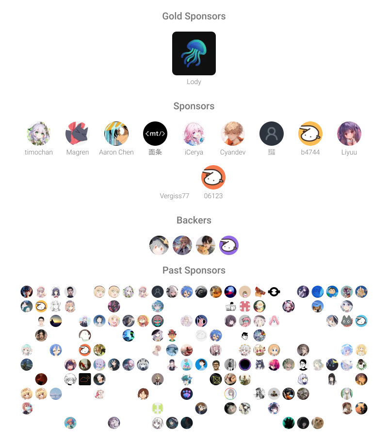

$ whoami
innei — design engineer · digital nomad
building beautiful things with code
$ echo $STACK
TypeScript · React · Next.js · NestJS · Swift
$ rank
██████████ S
「 Ich bin bereit, zu sterben, bereit, wieder geboren zu werden. 」
Featured Work
- Innei/Shiro — 📜 A minimalist personal website embodying the purity of paper and freshness of snow. ★4160
- Innei/Yohaku — 余白 / Yohaku — A personal blog design system. The blank space is part of the writing. ★15
- Afilmory/afilmory — Modern photo gallery for photographers, with S3/GitHub sync, EXIF details, maps, and a WebGL viewer. ★2462
- Torrent-Vibe/Torrent-Vibe — Torrent Vibe, a modern, elegant web interface for qBittorrent that transforms your torrent management experience with enhanced performance, intuitive design, and cross-platform compatibility. ★148
- lobehub/lobehub — The ultimate space for work and life — to find, build, and collaborate with agent teammates that grow with you. We are taking agent harness to the next level — enabling multi-agent collaboration, effortless agent team design, and introducing agents as the unit of work interaction. ★74359
Recent Writing

GitHub ·
Twitter ·
Blog